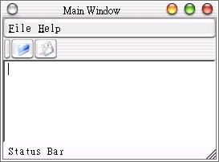

| QMainWindow類別提供一個標準的應用程式視窗，當中可以包括選單（QMenuBar）、工具列（QToolBar）、狀態列（QStatusBar）等等元件。 我們直接以範例來說明如何使用QMainWindow類別，下面這個程式只是示範如何配置元件，當中並沒有實作操作各元件後的內容： #include <qapplication.h> 這個程式在QMainWindow中填入了一個QTextEdit元件，而在選單設置的部份： QPopupMenu *file = new QPopupMenu(mw);
mw->menuBar()->insertItem("&File", file); file->insertItem("&Open", mw, SLOT(whatsThis()), Qt::Key_F2); file->insertItem("&Save", mw, SLOT(whatsThis()), Qt::CTRL + Qt::Key_S); menuBar()方法傳回QMainWindow的QMenuBar成員，我們使用insertItem()將我們設定的選單插入這個QMenuBar 中，其中我們隨便設定了按下選項後執行QMainWindow的SLOT - whatsThis()，這會出現一個？圖示，即我們使用線上求助的「這是什麼？」功能。 我們設定選單還可以使用快捷鍵，如果有兩個以上的鍵要同時按下才會作用，必須使用 + 來連結。 再來看看工具列的設定： QToolBar *fileTools = new QToolBar(mw, "file operations");
fileTools->setLabel("File ToolBar" ); new QToolButton(QPixmap("openIcon.xpm"), "Open File", "Open", &app, SLOT(quit()), fileTools, "open file"); new QToolButton(QPixmap("saveIcon.xpm"), "Save File", "Save", &app, SLOT(quit()), fileTools, "save file"); setLabel()設定工具列的標題名稱，工具列中的各個按鈕是QToolButton類別元件，當中可以設定圖示與按下後的接收者與SLOT，在這個程式中，我們隨便設定按下按鈕後連結至QApplication的SLOT- quit()以關閉程式。 狀態列的設定也很簡單： QStatusBar *statusbar = mw->statusBar();
statusbar->message("Status Bar"); statusBar()方法會傳回QMainWindow的QStatusBar元件，我們設定其顯示"Status Bar"的訊息。 下圖為執行後的結果畫面：  |